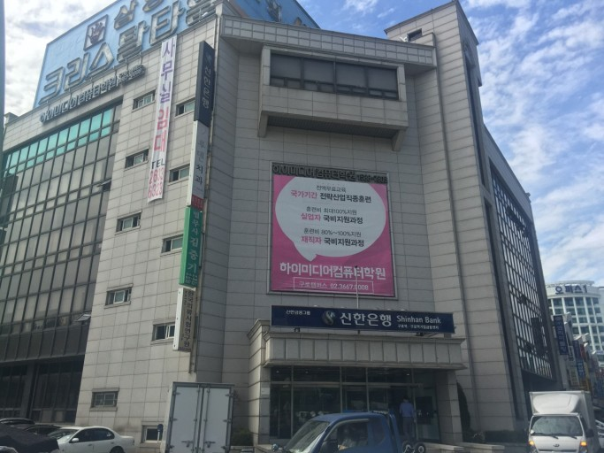

홈 > 복지관 소개 > 찾아오시는 길
찾아오시는 길

복지관 외부 사진
대중교통에 의한 전동휠체어 이용시
1호선 구로역 1번출구 하차 후 약 10분 구로역 (NC백화점) 구로9번, 5630버스 하차 후 약 10분대중교통 이용에 의한 도보시
1호선 구로역(NC백화점) 하차후 마을버스09 탑승. 구로역,구로기계상가 정류장 하차
주소 : 서울특별시 구로구 경인로 557 신한은행 건물 4층
팩스 070-8455-5768 이메일 chaei9803@naver.com
문의시간 : 월~금(9:00~18:00)
팩스 070-8455-5768 이메일 chaei9803@naver.com
문의시간 : 월~금(9:00~18:00)